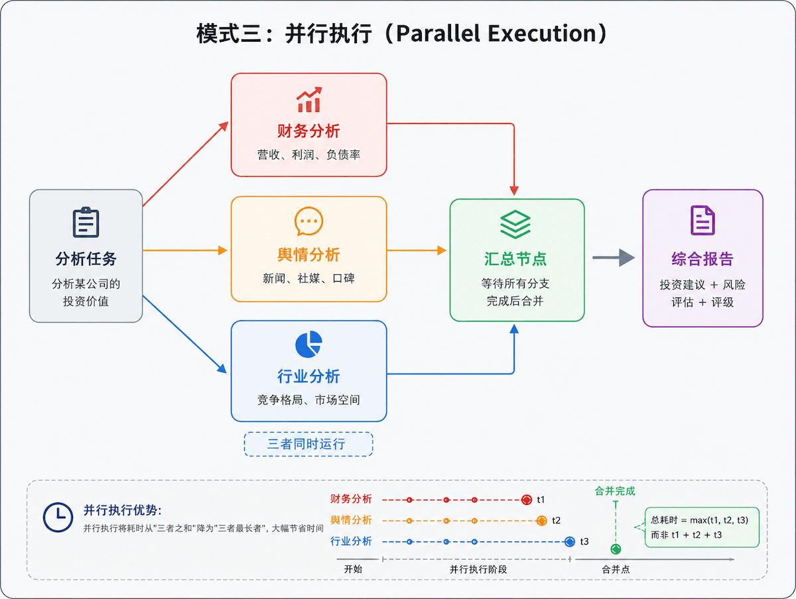

AI Workflow（AI 工作流）
AI Workflow（AI 工作流）是将多个 AI 模型调用、工具使用、数据处理步骤有序组合成一条自动化流水线的系统。
单独调用一次 LLM 能回答问题，但现实任务往往需要：查网页 → 提取信息 → 分析 → 写报告 → 发送邮件。AI Workflow 就是把这些步骤串起来，让 AI 自动完成完整任务，而不只是回答一句话。
一个直观的类比
想象一个装配流水线：
| 模式 | 类比 | 说明 |
|---|---|---|
| 单次 LLM 调用 | 像一个工匠 | 给他一块铁，他还给你一把剑 |
| AI Workflow | 像整条流水线 | 原料进去，自动经过冶炼 → 锻造 → 淬火 → 打磨 → 包装，成品出来 |
每个步骤可以是 AI 模型、代码函数、外部 API，或者人工审核节点。
从问答到做事的进化
为什么需要 AI Workflow
单次调用的局限
一次 LLM 调用能完成的事情非常有限：
- 上下文窗口有限：无法一次读完一本书
- 无法访问实时信息：训练数据有截止日期
- 无法执行操作：不能真正发邮件、写代码并运行
- 无法自我校验：生成错误后无法意识到并修正
- 复杂任务容易出错：一步做太多事情导致质量下降
AI Workflow 解决的五大核心问题
核心组成要素
一个完整的 AI Workflow 由以下核心要素构成。
各要素详解
LLM（大语言模型） - Workflow 的"大脑"，负责推理、生成、决策。常用：GPT-4o、Claude 3.5、Gemini 1.5、本地 Llama 3。
工具（Tools） - 让 AI 能与外部世界交互的接口，包括：搜索引擎（Tavily、Serper、Bing）、代码执行器（Python REPL、沙箱环境）、数据库查询（SQL、向量 DB）、外部 API（天气、股票、邮件、日历）、文件操作（读写、解析 PDF/Excel）。
记忆（Memory） - 短期记忆存储当前会话对话历史（存在 prompt 里），长期记忆通过向量数据库 + RAG 实现跨会话持久存储，工作记忆维护任务执行中的中间状态。
状态（State） - 任务在各步骤之间传递的信息载体，如同接力棒，每一步都能读取前步结果并写入新结果。
路由/条件（Router） - 根据前一步输出动态决定下一步走向，实现分支、循环、跳转等复杂流程控制。
人工介入（Human in the Loop） - 在关键节点暂停等待人工确认，适用于高风险操作（如删除数据、发送邮件、财务操作）。
六大常见 Workflow 模式
以下是 AI Workflow 中最常用的六种设计模式，从简单到复杂，适用于不同场景。
模式一：顺序链（Sequential Chain）
最基础的模式，步骤 A → B → C 线性执行，上一步输出是下一步输入。
| 维度 | 说明 |
|---|---|
| 适用场景 | 文档处理流水线、内容生成、数据转换 |
| 优点 | 简单、可预测 |
| 缺点 | 僵硬，无法根据内容动态调整 |
模式二：条件路由（Conditional Routing）
根据某一步的输出内容，动态选择不同的后续路径。
| 维度 | 说明 |
|---|---|
| 适用场景 | 智能客服、多功能助手、问题分类处理 |
| 优点 | 灵活，资源利用率高 |
| 缺点 | 路由逻辑需要精心设计，分类错误影响全流程 |
模式三：并行执行（Parallel Execution）
多个子任务同时运行，最后汇总结果。

| 维度 | 说明 |
|---|---|
| 适用场景 | 多维度分析、批量处理、独立子任务 |
| 优点 | 速度大幅提升 |
| 缺点 | 需要处理并发控制和结果合并逻辑 |
模式四：ReAct 循环（Reason + Act）
AI 先推理决定做什么，再行动调用工具，根据结果继续推理，循环直到任务完成。这是 AI Agent 的核心模式。
| 维度 | 说明 |
|---|---|
| 适用场景 | AI Agent、复杂任务执行、开放式问题求解 |
| 优点 | 动态灵活，可处理未知情况 |
| 缺点 | 循环次数不可控，需要设定最大步数防止死循环 |
模式五：Plan & Execute（规划后执行）
先让 LLM 制定完整计划，再按计划逐步执行。与 ReAct 的区别是"先想清楚，再行动"。
模式六：多智能体协作（Multi-Agent）
多个专职 Agent 分工合作，每个 Agent 有自己的角色和工具集。
| 维度 | 说明 |
|---|---|
| 适用场景 | 复杂软件开发、科研辅助、企业自动化 |
| 优点 | 专职专用，质量更高，易于扩展 |
| 缺点 | 系统复杂度高，Agent 间通信需要精心设计 |
主流框架与工具对比
以下是当前最主流的 AI Workflow 框架全景对比，帮助你根据自身情况做出选择。
框架选型决策树
根据你的具体情况，按照以下决策树选择合适的框架：
你的情况是什么？
│
├─── 没有编程基础，想用可视化工具搭建
│ ├─── 主要是 AI 应用（问答、生成）→ Dify（首选）
│ └─── 需要连接 Slack/邮件等 SaaS 系统 → n8n
│
├─── 有 Python 基础，代码优先
│ ├─── 做知识库 / RAG 系统 → LlamaIndex
│ ├─── 做多 Agent 协作，想快速上手 → CrewAI
│ ├─── 需要复杂有状态流程控制 → LangGraph
│ └─── 通用场景，想要最大生态 → LangChain
│
└─── 已有明确场景，生产级要求
├─── 高并发、精细控制 → LangGraph + LangSmith
└─── 企业部署、私有化 → Dify 自托管
快速上手：Python 代码示例
以下示例从最简单的顺序链到复杂的多 Agent 协作，逐步演示 AI Workflow 的实现方式。
LangChain 顺序链
最基础的 Workflow 模式，用管道操作符 | 串联多个 LLM 调用步骤。
安装依赖包：
pip install langchain langchain-openai
实例
from langchain_core.prompts import ChatPromptTemplate
from langchain_core.output_parsers import StrOutputParser
llm = ChatOpenAI(model="gpt-4o-mini", api_key="your-api-key")
# ─── 定义三个步骤 ────────────────────────────────────────────
# 步骤 1：将文章翻译成中文
translate_prompt = ChatPromptTemplate.from_template(
"将下面的英文文章翻译成中文，保持原意：\n\n{article}"
)
# 步骤 2：提取摘要
summarize_prompt = ChatPromptTemplate.from_template(
"请将以下文章提炼成 3 个要点，每点一句话：\n\n{translated}"
)
# 步骤 3：生成标题
title_prompt = ChatPromptTemplate.from_template(
"根据以下摘要，生成一个吸引人的中文标题（15字以内）：\n\n{summary}"
)
parser = StrOutputParser()
# ─── 用 | 操作符链接成流水线 ─────────────────────────────────
chain = (
{"translated": translate_prompt | llm | parser}
| {"summary": summarize_prompt | llm | parser,
"translated": lambda x: x["translated"]}
| title_prompt | llm | parser
)
# ─── 运行 ────────────────────────────────────────────────────
article = """
Artificial intelligence is transforming how we work and live.
From automating repetitive tasks to assisting in creative work,
AI tools are becoming indispensable in modern workflows...
"""
result = chain.invoke({"article": article})
print(result)
AI 正在重塑现代工作流：从自动化到创意辅助
工具调用 Agent（ReAct 模式）
ReAct 是 AI Agent 的核心模式，让 AI 在思考和行动之间循环，直到完成任务。
实例
from langchain.agents import AgentExecutor, create_react_agent
from langchain_core.tools import tool
from langchain import hub
import requests, datetime
# ─── 定义工具 ────────────────────────────────────────────────
@tool
def get_weather(city: str) -> str:
"""获取指定城市的当前天气信息"""
# 实际项目中替换为真实天气 API
mock_data = {
"北京": "晴天，气温 22°C，微风",
"上海": "多云，气温 26°C，湿度 75%",
"广州": "小雨，气温 30°C，建议带伞",
}
return mock_data.get(city, f"暂无 {city} 的天气数据")
@tool
def search_web(query: str) -> str:
"""在网络上搜索信息，返回相关内容摘要"""
# 实际项目中接入 Tavily / Serper API
return f"搜索 '{query}' 的结果：这是一个模拟的搜索结果..."
@tool
def calculate(expression: str) -> str:
"""计算数学表达式，例如 '2 + 3 * 4'"""
try:
result = eval(expression, {"__builtins__": {}}, {})
return str(result)
except Exception as e:
return f"计算错误：{e}"
@tool
def get_date() -> str:
"""获取今天的日期"""
return datetime.date.today().strftime("%Y年%m月%d日")
# ─── 创建 Agent ───────────────────────────────────────────────
tools = [get_weather, search_web, calculate, get_date]
llm = ChatOpenAI(model="gpt-4o", temperature=0)
# 使用 LangChain Hub 的标准 ReAct prompt
prompt = hub.pull("hwchase17/react")
agent = create_react_agent(llm, tools, prompt)
agent_executor = AgentExecutor(
agent=agent,
tools=tools,
verbose=True, # 打印每步思考过程，方便调试
max_iterations=8, # 防止无限循环
handle_parsing_errors=True
)
# ─── 运行 ────────────────────────────────────────────────────
result = agent_executor.invoke({
"input": "今天是几号？北京天气怎么样？如果出门步行 5km 消耗约 300 卡路里，"
"跑步同样距离消耗大约是步行的 1.6 倍，请计算跑步消耗的卡路里。"
})
print(result["output"])
# Agent 会自动决策：先调用 get_date → get_weather("北京") → calculate("300*1.6")
# 最后综合所有信息给出完整回答
LangGraph 有状态 Workflow
LangGraph 用图的方式定义复杂流程，每个节点是一个函数，边定义跳转逻辑。
实例
from langchain_openai import ChatOpenAI
from typing import TypedDict, Annotated
import operator
# ─── 定义状态结构（在节点间传递的数据）────────────────────────
class ResearchState(TypedDict):
topic: str # 研究主题
research_notes: str # 研究笔记
draft: str # 草稿
review_feedback: str # 审阅意见
final_report: str # 最终报告
revision_count: Annotated[int, operator.add] # 修改次数（累加）
llm = ChatOpenAI(model="gpt-4o")
# ─── 定义节点函数 ─────────────────────────────────────────────
def research_node(state: ResearchState) -> dict:
"""节点1：调研阶段"""
response = llm.invoke(
f"请对以下主题进行简要调研，列出 5 个关键要点：{state['topic']}"
)
return {"research_notes": response.content}
def write_node(state: ResearchState) -> dict:
"""节点2：撰写草稿"""
prompt = f"""
主题：{state['topic']}
调研笔记：{state['research_notes']}
{'上次审阅意见：' + state.get('review_feedback', '') if state.get('review_feedback') else ''}
请根据以上内容撰写一篇 300 字的分析报告草稿。
"""
response = llm.invoke(prompt)
return {"draft": response.content, "revision_count": 1}
def review_node(state: ResearchState) -> dict:
"""节点3：审阅草稿"""
response = llm.invoke(
f"审阅以下报告，如果质量达标回复 'APPROVED'，否则给出具体修改意见：\n\n{state['draft']}"
)
return {"review_feedback": response.content}
def finalize_node(state: ResearchState) -> dict:
"""节点4：最终定稿"""
return {"final_report": state["draft"]}
# ─── 路由函数：决定审阅后走哪条路 ─────────────────────────────
def should_revise(state: ResearchState) -> str:
if "APPROVED" in state["review_feedback"]:
return "finalize" # → 最终定稿
elif state["revision_count"] >= 3:
return "finalize" # → 超过3次修改，强制结束
else:
return "revise" # → 返回写作节点修改
# ─── 构建工作流图 ─────────────────────────────────────────────
workflow = StateGraph(ResearchState)
# 添加节点
workflow.add_node("research", research_node)
workflow.add_node("write", write_node)
workflow.add_node("review", review_node)
workflow.add_node("finalize", finalize_node)
# 设置入口
workflow.set_entry_point("research")
# 添加边（定义流转逻辑）
workflow.add_edge("research", "write") # 调研 → 写作
workflow.add_edge("write", "review") # 写作 → 审阅
# 条件边：审阅后根据结果选择路径
workflow.add_conditional_edges(
"review",
should_revise,
{
"revise": "write", # 需要修改 → 回到写作
"finalize": "finalize" # 通过审核 → 最终定稿
}
)
workflow.add_edge("finalize", END)
# 编译并运行
app = workflow.compile()
result = app.invoke({"topic": "生成式 AI 对软件开发行业的影响", "revision_count": 0})
print(result["final_report"])
CrewAI 多 Agent 协作
CrewAI 通过定义角色和任务，让多个 Agent 像团队一样协作。
实例
from langchain_openai import ChatOpenAI
llm = ChatOpenAI(model="gpt-4o")
# ─── 定义 Agent（角色） ────────────────────────────────────────
researcher = Agent(
role="市场研究员",
goal="收集并整理关于目标主题的全面、准确的市场信息",
backstory="你是一位经验丰富的市场分析师，擅长从海量信息中提炼关键洞察",
llm=llm,
verbose=True
)
analyst = Agent(
role="数据分析师",
goal="基于研究员提供的信息，进行深度分析并得出有价值的结论",
backstory="你擅长用数据说话，能发现隐藏在信息背后的趋势和机会",
llm=llm,
verbose=True
)
writer = Agent(
role="报告撰写专家",
goal="将分析结论撰写成清晰、专业、有说服力的报告",
backstory="你有丰富的商业写作经验，能让复杂的分析变得易于理解",
llm=llm,
verbose=True
)
# ─── 定义 Task（任务） ────────────────────────────────────────
research_task = Task(
description="调研中国新能源汽车市场的现状，包括主要品牌、市场份额、增长趋势",
expected_output="一份包含 5 个关键数据点的市场调研报告，含数字和具体事实",
agent=researcher
)
analysis_task = Task(
description="基于调研报告，分析未来 3 年的机会与风险，给出投资评级建议",
expected_output="SWOT 分析表格 + 投资评级（强烈推荐/推荐/中性/谨慎）+ 理由",
agent=analyst,
context=[research_task] # 依赖调研任务的输出
)
writing_task = Task(
description="将调研和分析整合成一份 500 字的专业投资简报，格式清晰",
expected_output="包含执行摘要、市场现状、机会风险、投资建议四个部分的简报",
agent=writer,
context=[research_task, analysis_task]
)
# ─── 组建团队并执行 ───────────────────────────────────────────
crew = Crew(
agents=[researcher, analyst, writer],
tasks=[research_task, analysis_task, writing_task],
process=Process.sequential, # 顺序执行（也可改为 hierarchical）
verbose=True
)
result = crew.kickoff()
print(result)
Human-in-the-Loop（人工审核节点）
LangGraph 支持在关键步骤暂停，等待人工确认后再继续执行。
实例
from langgraph.checkpoint.memory import MemorySaver
from typing import TypedDict
class EmailState(TypedDict):
recipient: str
content: str
approved: bool
def draft_email(state: EmailState) -> dict:
"""起草邮件"""
content = f"尊敬的 {state['recipient']}，\n\n这是 AI 起草的邮件内容...\n\n此致"
return {"content": content}
def send_email(state: EmailState) -> dict:
"""发送邮件（高风险操作，需要人工审核后才执行）"""
print(f"邮件已发送给 {state['recipient']}")
return {}
# 路由：根据人工审核结果决定是否发送
def check_approval(state: EmailState) -> str:
return "send" if state.get("approved") else END
workflow = StateGraph(EmailState)
workflow.add_node("draft", draft_email)
workflow.add_node("send", send_email)
workflow.set_entry_point("draft")
# draft 完成后暂停，等待人工审核（interrupt_after）
workflow.add_conditional_edges("draft", check_approval, {"send": "send", END: END})
workflow.add_edge("send", END)
# 使用 MemorySaver 支持中断和恢复
memory = MemorySaver()
app = workflow.compile(
checkpointer=memory,
interrupt_after=["draft"] # 在 draft 节点后暂停
)
config = {"configurable": {"thread_id": "email-001"}}
# 第一次运行：执行到 draft 后暂停
state = app.invoke({"recipient": "客户A", "approved": False}, config)
print("草稿已生成，等待审核：")
print(state["content"])
# 人工审核后，更新状态并继续执行
user_input = input("\n是否批准发送？(y/n): ")
if user_input.lower() == "y":
app.update_state(config, {"approved": True})
app.invoke(None, config) # 从断点继续
print("邮件已发送")
else:
print("已取消发送")
Prompt 工程：Workflow 中的关键技巧
在 AI Workflow 中，Prompt 的质量直接影响每个节点的输出质量。
实例
# system_prompt = "你是一个 AI 助手，帮我分析这份文档"
# 清晰的角色定义（推荐）
system_prompt = """
你是一位专业的财务分析师，专注于识别财务报告中的风险信号。
你的任务：从以下报告中提取所有涉及负债、现金流和盈利能力的关键数据点。
输出格式：JSON，包含 risk_level（high/medium/low）和 key_findings（列表）。
注意：只输出 JSON，不要添加任何说明文字。
"""
实例
# state["previous_output"] = "分析结果：这个公司看起来不错，有一些风险..."
# 传递结构化数据（推荐）
state["analysis_result"] = {
"risk_level": "medium",
"key_findings": ["负债率 45%，行业均值 38%", "现金流为正，Q3 环比下降 12%"],
"recommendation": "谨慎持有"
}
实例
prompt = """
请分析以下文本的情感倾向。
严格按照如下 JSON 格式输出，不要添加任何其他内容：
{
"sentiment": "positive" | "negative" | "neutral",
"confidence": 0.0-1.0,
"reason": "简短说明"
}
文本：{text}
"""
错误处理与重试
实例
import logging
@retry(
stop=stop_after_attempt(3), # 最多重试 3 次
wait=wait_exponential(multiplier=1, min=2, max=10) # 指数退避等待
)
def call_llm_with_retry(prompt: str) -> str:
try:
response = llm.invoke(prompt)
return response.content
except Exception as e:
logging.error(f"LLM 调用失败：{e}")
raise
def safe_parse_json(text: str) -> dict:
"""安全解析 LLM 输出的 JSON"""
import json, re
# 提取 JSON 部分（LLM 有时会加多余的说明文字）
json_match = re.search(r'\{.*\}', text, re.DOTALL)
if json_match:
try:
return json.loads(json_match.group())
except json.JSONDecodeError:
pass
return {"error": "解析失败", "raw": text}
成本控制
实例
def get_llm(task_type: str):
if task_type == "classification": # 分类任务，轻量模型足够
return ChatOpenAI(model="gpt-4o-mini")
elif task_type == "generation": # 生成任务，用中等模型
return ChatOpenAI(model="gpt-4o-mini")
elif task_type == "reasoning": # 复杂推理，用强模型
return ChatOpenAI(model="gpt-4o")
# ─── 缓存重复请求 ──────────────────────────────────────────
from langchain.globals import set_llm_cache
from langchain_community.cache import InMemoryCache
set_llm_cache(InMemoryCache()) # 相同输入直接返回缓存，不重复计费
# ─── 文本分块避免超长 ──────────────────────────────────────
from langchain.text_splitter import RecursiveCharacterTextSplitter
splitter = RecursiveCharacterTextSplitter(
chunk_size=2000, # 每块 2000 字符
chunk_overlap=200 # 重叠 200 字符保证上下文连贯
)
chunks = splitter.split_text(long_document)
典型应用场景
AI Workflow 已经在多个领域广泛落地，以下是六个最具代表性的场景。
最佳实践与常见陷阱
常见陷阱与解决方案
以下是初学者在使用 AI Workflow 时最容易遇到的问题。
| 陷阱 | 现象 | 解决方案 |
|---|---|---|
| 幻觉级联 | 前一步 AI 输出错误，被当成事实传给下一步，错误被放大 | 关键节点增加验证步骤；数值类信息用工具获取 |
| 无限循环 | ReAct Agent 反复调用工具，不知道何时停止 | 设置 max_iterations；给 LLM 明确的终止条件 |
| 上下文爆炸 | 随着步骤增加，传入 LLM 的文本越来越长，超出窗口 | 每步只传必要字段；用摘要压缩历史信息 |
| 工具滥用 | Agent 明明可以直接回答，却反复调用工具 | 优化工具描述；给 LLM 明确说明何时不需要工具 |
| JSON 解析失败 | LLM 输出格式不稳定，程序崩溃 | 加 safe_parse_json；用 LangChain OutputParser |
| 费用超支 | 未估算 token 用量，月底账单超预期 | 先用 gpt-4o-mini 测试；用 LangSmith 监控用量 |
| 并发冲突 | 多个 Agent 同时写同一个状态导致数据错乱 | 用 LangGraph 内置状态管理；避免共享可变状态 |
总结与学习路径
核心知识点回顾
推荐学习路径
第一阶段：理解基础（1 周）
- 理解 LLM API 调用，能用 OpenAI SDK 发起请求
- 跑通本文 LangChain 顺序链示例
- 理解 Prompt Engineering 基本原则
第二阶段：工具与 Agent（2 周）
- 学会用 @tool 装饰器定义工具
- 跑通 ReAct Agent 示例，观察 verbose 日志理解循环逻辑
- 用 Dify 或 n8n 搭建一个可视化 Workflow 原型
第三阶段：复杂 Workflow（3 周）
- 学习 LangGraph 状态图，实现带条件分支的工作流
- 用 CrewAI 实现一个双 Agent 协作任务
- 接入真实工具（Tavily 搜索、Python REPL）
- 用 LangSmith 观测并调试你的 Workflow
第四阶段：生产就绪（持续）
- 实现错误重试、结构化输出解析
- 成本监控与优化（模型分级使用）
- 部署到生产，设置监控告警

点我分享笔记